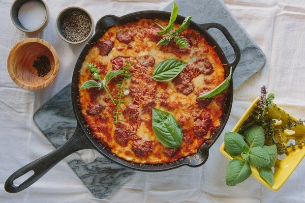

You're going to have your cast-iron forever, so you need to choose the right model. We ranked six skillets based on their seasoning and design elements.
As part of this newfound popularity, newer models like the Field Skillet and Finex have arrived on the market. At Epi, we wanted to test these newer, high-dollar models against a no-fluff brand like Lodge and other highly ranked economical skillets. We wanted to know: are the fancy new design features really valuable and worthy of the higher price tag? What's the best cast-iron skillet money can buy?
The skillets we Recommend

1.The Best Straight Out of the Box:The Victoria skillets
The pre-seasoned coating is what earned this cast-iron skillet its top ranking. Food simply did not stick to its surface. The initial egg I fried in oil slid off the pan so easily that I was curious about what would happen if I used no oil at all. Sure enough: I cracked an egg into the pan and fried it with absolutely no oil, and in the end it slid out easily. I began to suspect that something sinister was at work and that the skillet had a secret chemical nonstick coating. But according to Victoria's website, it is seasoned only with oil.
BUY IT: Victoria Cast Iron 12" Skillet Fry Pan with Long Handle, Seasoned, 12 inch, $32 on Amazon
 2.Another Good , Economical choice:
2.Another Good , Economical choice:The Camp Chef Skillet
The Camp Chef is another affordable cast-iron skillet. It is made in China and its design elements are fairly unremarkable: it's a standard cast-iron skillet, similar to a classic Lodge. Used straight out of the box, this skillet wasn't especially nonstick—fried and scrambled eggs stuck to the surface considerably. But this skillet responded to additional seasoning remarkably well: It was somehow easier to achieve an even coat of seasoning on the surface of this pan than the Lodge (see below). And after just one round of seasoning, the surface became very nonstick. This is a perfectly good option for an economical cast-iron.
BUY IT: Camp Chef 12-Inch Cast-Iron Skillet, $16 on Amazon
 Kshitiz Goel
Kshitiz Goel